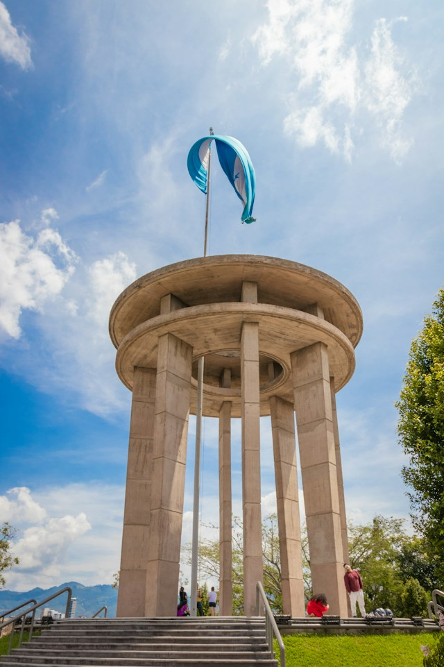
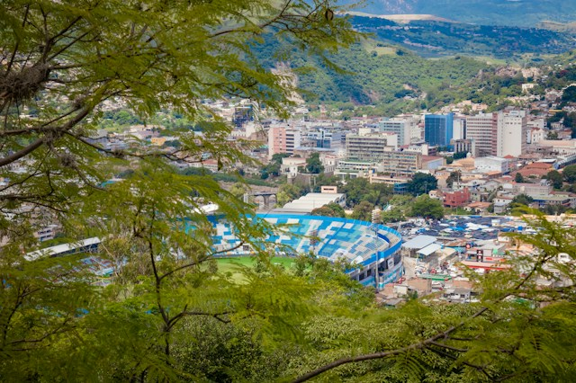
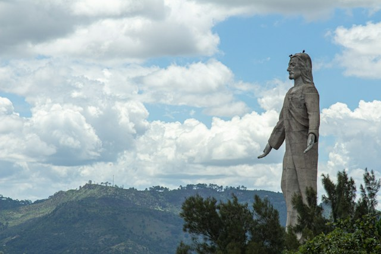

Visit Tegucigaalpa!
Enjoy culture and sports in this vibrant close to the center of Owslow.
Top three activities to do in Teguz

Visit Juana's Hill Park
Enjoy local restaurant and different activities incluiding renting bikes or small electric cars, having picnics and checking out the beautiful views of the city from the hill in the center of it.

Visit National Stadium Jose 'Chelato' de la Paz Herrera
Get tickets to experience the passion that 'futbol' in Honduras and support one of the local teams. Delicious food, treats and local beer can be bought inside.

Visit Cristo del Picacho Park
On one of the mountains that sorrounds the city lies the most iconic park and monument of the in town. Don't forget to appreciate the astounding views.
Your Guide
I have lived in Tegucigalpa for over 30 years, so I can show all the best places and also the secret Tegucigalpian awesomeness